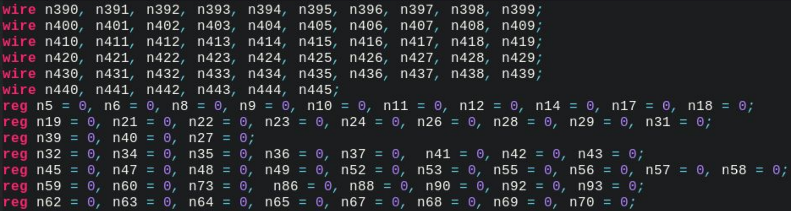
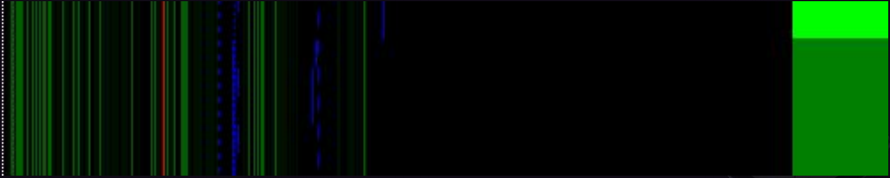

XNUCA2019 Flag Teller
按照寒假的计划好好的研究了这道XNUCA2019资格赛中零解的Flag Teller，本题是出题方基于WCTF2019中的TPM2137这道题目出的题。属于非常少见的FPGA逆向，在经历一周的努力之后可以确认在当前的条件下这道题目近乎于无解，除非做题方拥有非常高超的仿真能力和丰富的经验。
题面
FlagTeller
分值：500 未解答
This is the bitstream file for a FPGA powered toy device. If you give out the correct password, the device may tell the flag.
Pin 35 is 12MHz clock, pin 6 is input uart port and pin 11 is output uart port. Input the 16-byte password into the input port and get the flag from output port.
FPGA型号为iCE40 UP5K，串口波特率115200Hz
母题
首先从本题的母题展开，优先讲一讲WCTF2019中的题目是怎么做出来的，官方WP。
出题方编了一个叫TPM2137的硬件密码验证机器，并且给出了dump出来的bitstream文件。
特性：
- 密码由8个字母组成
- 输入由标准的UART协议完成
- 时钟周期12MHz
- 输出有两个pin口，分别连接LED，低电平时有效
- 如果输入的密码正确，那么绿色的LED就会亮
解题思路
bitstream对于FPGA来说就好比可执行文件对于源码，是开发人员用verilog等语言描述完自己所需要的硬件逻辑之后生成的配置文件。FPGA的芯片中本就包含有很多的硬件资源，在FPGA芯片上电之后读取bit stream文件并配置好自己的连线和逻辑单元等，之后就可以按照开发人员的预期高效的完成特定任务。
那么我们首先需要把特定于所用芯片的bit stream转化成可以处理的形式。
这里就是为什么出题方选用了iCE40系列芯片，这款芯片已经被逆向完了而且给出了相关的工具可以吧bit stream文件转换成等价的verilog形式。

在这之后可以得到密码验证器的配置情况，然后就要分析这个电路。转换完之后的电路由选通器，逻辑门和存储单元构成。于是思路就是
- 对结果的电路进行仿真，不断的改变发送的8位密码，通过变化找到芯片内部存储输入的存储单元
- 而与输入无关但是周期性变化的则是计数器(蓝色)

在仿真之后可以确认芯片内部确实是采用了存储单元来缓存用户输入并完成比较。
之后问题就变得明朗了:
- 解析转化完之后的电路
- 从让绿色LED为低电平开始遍历相连的网络和节点，不断获取到相关的连接网络并级联
- 转换成为表达式并输入Z3求解得到最终让绿LED发光的存储单元内容
- 再遍历UART接收部分电路逆向得到所需的用户输入
题目分析
这个解题方案中有两点非常理想化，并最终促成了题目的解答：
- 校验电路直接比较，没有时钟信号的接入，直接是FF的值比较，这使得Z3表达式的生成简单且可行。不然时钟信号在其中会产生干扰
- 需要提前知晓UART到存储单元的连接方式，不然上面的第4点就无法完成
本题
本题是对于TPM2137的全面增强，不仅在检验部分引入了时序信号，而且输入输出均使用UART，而且内部使用了$GF(2^8)$上的运算作为加密。
更正
首先在做题之前，需要对一点错误进行改正，出题人在写UART输出的时候有误，需要略做修改保证正常读取：
1 | module uart_put( |
需要改成
1 | module uart_put( |
就算输出的时候不在乎奇偶校验位，开始位的电平也要拉低，不然无法识别UART帧的开始。这里给出修改之后的bitstream
解题
之后采用Verilator进行仿真，准备工作：
1 | iceunpack ./challenge.bit > ./challenge.asc |
因为icebox_vlog给出的verilog的结果质量不高，所以需要yosys跑一下综合再输出verilog代码给verilator用。verilator首先生成和verilog代码等价的C++代码，然后用户就可以按照自己的需求和C++版的代码进行交互，得到仿真的结果了。
1 |
|
编译：
g++ -O0 -I/usr/share/verilator/include obj_dir/Vchip.cpp obj_dir/Vchip__Syms.cpp obj_dir/Vchip__Trace__Slow.cpp obj_dir/Vchip__Trace.cpp /usr/share/verilator/include/verilated.cpp /usr/share/verilator/include/verilated_vcd_c.cpp challenge.cpp -o ./challenge
对应的代码就是模拟输入了16位密钥，并且采集了芯片内所有的信号到制定的文件trace.vcd中。之后就可以根据这个文件生成仿真的FF变化图，推荐使用verilog-vcd-parser，Python下面没找到理想的解析库比较可惜。
分析得到的结果并不理想，能够识别出有用来存储的FF，但是不能确定到底是哪几个，和TPM的情况相同。
但是因为输出也采用了UART，所以不像TPM那样可以简单的根据一个0/1的信号倒推。查看源码：
1 | always @(posedge clk_12) begin |
可以得知其实有一个stage的FF保存了当前处于哪一个状态，这对于用Z3来进行求解带来了挑战，总不能写出类似于$stage = 7 && stage = 6$这样一个变量在两个时刻取不同值的情况吧。但是其实还是有办法的，针对时钟信号进行特殊处理，用Z3在每一个时钟信号的情况下进行分步求解。
针对这个修改我尝试修改TPM的源码来进行实验，因为TPM比较简单，方便做POC：
1 | diff --git a/generate/challenge.v b/generate/challenge.v |
在TPM2137中引入stage之后重新生成bit stream文件，并尝试求解。原版的solve.py在逆推电路的时候如果遇到DFF时会直接返回：
1 | class Dff(Cell): |
以为修改了之后，引入了stage，会导致输出信号的暂存，所以DFF的输出口直接和led_red / led_green相连，如果在DFF就停下来的话无法恢复出原有结构。修改之，并对pin_35这条时钟线作出针对处理后，脚本成功爆了调用栈的最大层数。实际上是因为没有当遇到DFF时返回这个处理，网络恢复触及到了UART等时序部件，复杂度太大了。如果想要限制住，可以限定到达UART的用户输入存储单元，但是单靠verilator的仿真实在是过于勉强。即使是TPM2137可以得到，在面对Flag Teller时也显得不现实。
出题人在Github的Repo中表示预期解是在有源码的情况下找到存储了加密后的flag的FlipFlop阵列。然而在测试之后发现不管在：
- 反综合之后的verilog(随着memory.bin变化，连线和Cell数量变动)
- 反综合之后的json(同上)
- 反综合之后的verilator仿真(根本不变)
三种情况下都无法建立单个存储位点和联系，所以就目前而言做不了
总结
就目前而言，能够针对厂商专有的bit stream文件格式逆向得到明文的连接结果就已经是顶峰，想要在之上进行进一步的逆向就比赛级别而言难以实现。如果遇到类似的题目，直接查看节点和连线规模，大于TPM2137两倍以上或者UART输出的题目可以直接放弃。
可以说TPM2137就是这类题目最合适的出题程度。
但是就算是这样，FPGA的题目依旧有其存在意义，一旦在对后bit stream环节的逆向手段有所突破，这类题型定然会活跃起来。并且真的挺新颖，让人眼前一亮。